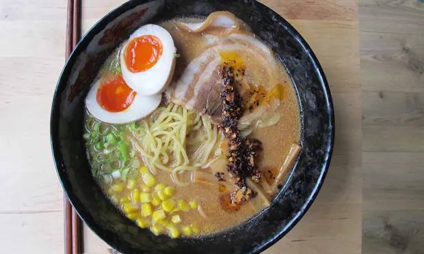

Miso Ramen

Miso Ramen Recipe
Description
An easy to cook Miso Ramen for busy individuals
Flavoured with fresh miso, this easy to cook ramen can be completed in less than 30 MINUTES!
Ingredients are readily found in major convenience stores and supermarkets
Ingredients
Ramen Soup
- 2 x Garlic
- 1 x Ginger
- 1 Shallot
- 1 tbsp toasted white sesame seeds
- 1 tbsp roasted sesame oil
- ¼ lb ground pork
- 3 tbsp Miso
- 4 cups of Chicken Broth
Ramen Main Ingredients
- 5 x Chashu
- ! serving of Ramen Noodles
- 2 tbsp Green Scallion
Steps
- Mince the garlic
- In a medium pot, heat the sesame oil over medium-low heat and add the minced shallot
- Add the meat and increase heat until meat no longer pink
- Add sake and chicken stock and simmer
- Cook noodles well and add in soup